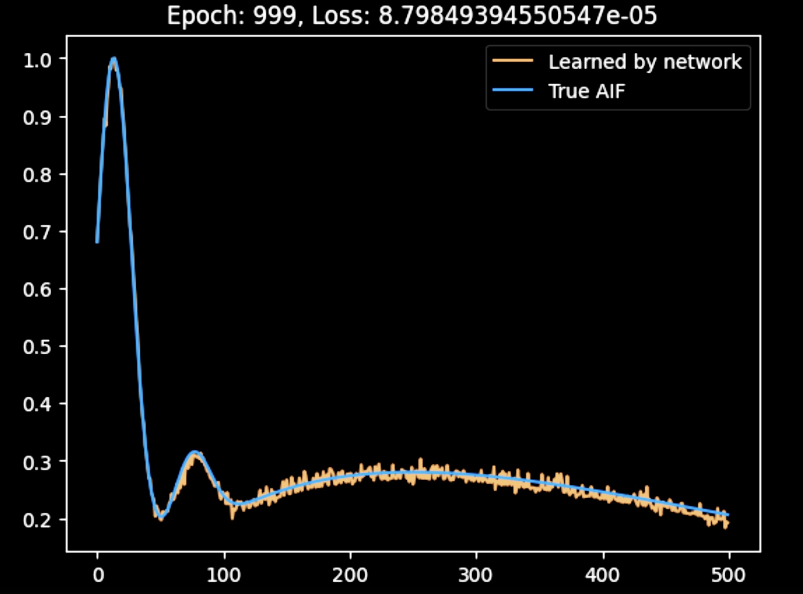
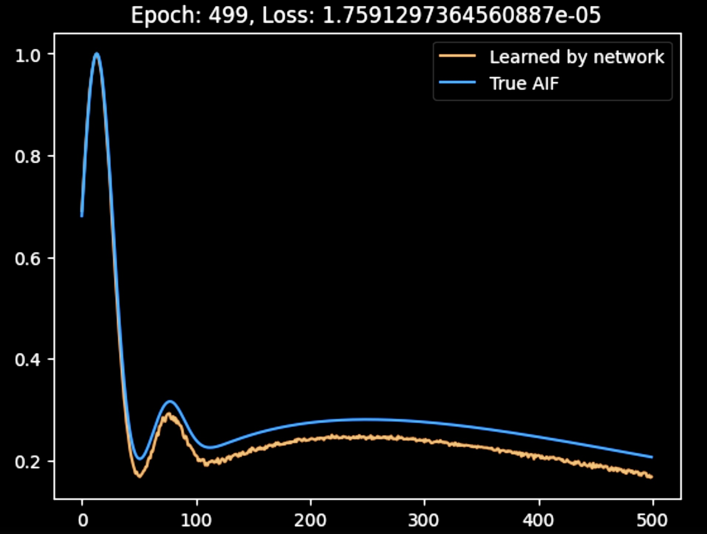

Quick Summary
I developed a novel machine learning approach for DCE-MRI to estimate PK parameters and the AIF directly from contrast-time curves, without needing explicit AIF measurement. By tailoring a neural network to individual patients, I can achieve more accurate and reliable results, optimizing the process beyond traditional methods. This project is ongoing.

Estimating PK Parameters in DCE-MRI Without an AIF
Dynamic Contrast-Enhanced MRI (DCE-MRI) is a powerful tool for analyzing microvascular function and diagnosing various conditions, including cancer. The estimation of pharmacokinetic (PK) parameters such as the volume transfer constant Ktrans, the extracellular extravascular volume fraction (ve), and the plasma volume (vp) is crucial in this process. Traditionally, these parameters are derived using the Arterial Input Function (AIF), which represents the concentration of a contrast agent in the blood over time.
The Challenge with AIF
The accurate measurement of the AIF is challenging due to the need for high temporal resolution, potential errors from using alternative AIFs, and difficulties in capturing the true AIF that feeds the tissue of interest. These challenges often lead to inaccuracies in PK parameter estimation, which can compromise the clinical utility of DCE-MRI.
AIF-Free Approaches
To address these issues, various AIF-free techniques have been developed. These methods can be broadly categorized into unconstrained, constrained, and machine learning approaches:
- Unconstrained Methods: These do not assume any specific form of the AIF, offering flexibility but often struggling with noise and non-convex optimization problems. Notable examples include Iterative Quadratic Maximum-Likelihood (IQML) and Eigenvector-Based Algorithm for Multichannel Blind Deconvolution (EVAM).
- Constrained Methods: These approaches impose a parameterized model on the AIF, reducing the number of free parameters and enhancing robustness to noise. Methods like Model-Based Blind Estimation and Model-Constrained Monte Carlo have shown promise by assuming that the AIF can be represented by a combination of functions, such as gamma functions and sigmoids. In both constrained and unconstrained approaches, parameter estimation is typically performed using descent methods, where the algorithm iteratively adjusts the parameters to minimize the difference between the measured and predicted data.
- Machine Learning (ML) Approaches: These methods leverage the power of machine learning to estimate PK parameters directly from the DCE-MRI data, bypassing the need for an explicit AIF. In these approaches, a neural network or other ML model is trained on a large dataset of DCE-MRI images, where the AIF and PK parameters are either known or simulated. The model learns to map the input DCE-MRI time series to the desired PK parameter maps. This can be done with either fully sampled or undersampled data.
- Example 1: A convolutional neural network (CNN) is trained to take a sequence of DCE-MRI images as input and directly output maps of Ktrans, ve, and vp without requiring an AIF. The network is trained on a large dataset where the ground truth PK parameter maps are known, enabling it to learn the complex relationships between the DCE-MRI signal and the PK parameters.
- Example 2: An ML model is trained on undersampled DCE-MRI data, where the model not only estimates the PK parameters but also performs implicit reconstruction of the images. This approach is particularly useful in accelerating the MRI acquisition process while maintaining high accuracy in PK parameter estimation.
Toft’s Model
A widely used model in DCE-MRI for estimating PK parameters is the Toft’s model. This model describes the transfer of contrast agent between blood plasma and tissue and is expressed as:
\[
C_t(t) = K^{\text{trans}} \int_0^t C_p(\tau) e^{-k_{ep}(t-\tau)} d\tau
\]
where:
- \(C_t(t)\) is the concentration of the contrast agent in the tissue at time \(t\),
- \(C_p(t)\) is the concentration of the contrast agent in the plasma (AIF),
- \(K^{\text{trans}}\) is the volume transfer constant between plasma and the extravascular extracellular space,
- \(k_{ep}\) is the rate constant between the extracellular extravascular space and plasma.
An extended version of the Toft’s model also includes the plasma volume fraction (\(v_p\)):
\[
C_t(t) = v_p C_p(t) + K^{\text{trans}} \int_0^t C_p(\tau) e^{-k_{ep}(t-\tau)} d\tau
\]
My Approach
In my research, I employ a machine learning approach to estimate PK parameters and the Arterial Input Function (AIF) directly from measured contrast-time curves. This approach involves two neural networks: one dedicated to learning the AIF and another to learning the PK parameters.
Noteworthy Limitation
A key limitation in this process is that the AIF, Ktrans, and vp (if using the extended Tofts model) can only be learned within the same scaling constant. While Kep can be learned exactly, mathematically, it’s impossible to determine this constant without additional information, such as periodic blood sampling during the imaging process.
Network Structure
The input to both networks is a group of four measured contrast-time curves. The AIF network outputs the AIF it believes generated these curves, while the PK network outputs the Ktrans and Kep associated with the first of the four curves.
Step-by-Step Approach
- Initial Training: The AIF network is first trained by having it learn the population average AIF.
- Joint Training: Both networks are then trained together. The loss function is computed by using the network outputs and the Tofts model to determine what the input Ct curve would have been, followed by calculating the Mean Squared Error (MSE) between the actual input Ct curve and the back-calculated one.
- Advanced Training: The networks undergo further training with a technique that involves averaging predictions across multiple runs. This process is structured as follows:
- The four inputs are used to generate predicted AIFs and PK parameters.
- The last three inputs are then swapped out, and new predictions are made for the remaining input.
- This is repeated multiple times, and the final PK prediction is the average of all predictions, training the network to be correct on average.
- Final Use Case: The final trained network allows the user to perform similar swapping and select the AIF/PK parameter pairs that best fit the Tofts model from the multiple results produced.
Advantages of My Approach
This approach offers several advantages:
- Patient-Specific Adaptation: By tailoring the model to individual patients, I achieve more accurate and reliable estimates, optimizing the process beyond traditional methods.
- Multiple Result Selection: The network is designed to produce multiple results, allowing for the selection of the best-fitting AIF/PK parameter pairs, rather than relying on a single result. This enhances the robustness and reliability of the predictions.
- Enhanced Clinical Utility: This patient-specific adaptation not only allows for more precise estimates but also enhances the clinical utility of the model. By directly estimating the AIF and PK parameters from measured contrast-time curves without the need for explicit image reconstruction, this method streamlines the DCE-MRI analysis process, making it faster and more robust to the specific challenges associated with AIF measurement.
This figure shows the AIF produced by the network after the initail joint training. While the AIF is a bit noisy, it is accurately reconstructed by the network.

Here, the AIF produced by the network after advanced training is shown. The output is smoother than in the previous figure, likely due to the averaging process; however, the accuracy of the reconstructed AIF is not as high. I am currently adjusting the hyperparameters to improve the results.
Future Research
In future work, instead of relying on averaging, I plan to explore an approach where multiple runs of the network are performed, and the AIF and PK parameter combination with the best loss is selected for backpropagation. This method could achieve similar benefits to the current averaging technique while potentially improving the accuracy and robustness of the final model.